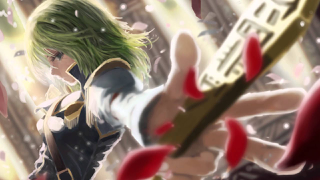
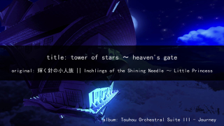
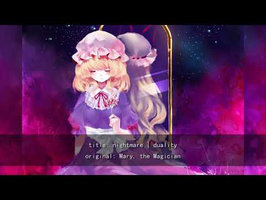

-

【東方】Orchestral - Fate of Sixty Years [arrange] [Detail]
Title: Iron-willed Judgment ~ Abyssal Nightmare Arranger: crescentia Original Track: 六十年目の東方裁判 ～Fate of Sixty Years Game: Touhou 9: 東方花映塚 ～ Phantasmagoria of Flower View, lit. "Eastern Flower Viewing Mound" Soundcloud download and comments: https://soundcloud.com/crescentia/iron-willed-judgment-abyssal-nightmare Image from: http://www.pixiv.net/member_illust.php?mode=medium&illust_id=44072155
-

【東方】Orchestral - Inchlings of the Shining Needle ~ Little Princess [Detail]
download/buy: https://crescentia.bandcamp.com/album/touhou-orchestral-suite-iii-journey album: Touhou Orchestral Suite III - Journey title: tower of stars ~ heaven's gate original: 輝く針の小人族 || Inchlings of the Shining Needle ～ Little Princess (Stage 6 Boss Theme) from: Touhou 14 - 東方輝針城 ～ Double Dealing Character --- Socials --- Orchestral/Doujin Music Discord: https://discord.gg/n3VA258 Bandcamp: https://crescentia.bandcamp.com Ko-fi: https://ko-fi.com/crescentia Twitter: https://twitter.com/d3_crescentia
-

Echoes of 495 Years (Touhou house/electronic remix) [Detail]
Hey! I know it's been a while since I uploaded anything, so sorry about that! I wanted to try and improve my ability before I went back to regular uploads. I really like how this turned out, so I hope you enjoy! This was made for Gensokyo Festival, a month-long event to celebrate the Touhou Project. https://gensokyofestival.tumblr.com ___________ Original: Centennial Festival for Magical Girls, extra stage theme from Touhou 6: Embodiment of Scarlet Devil Arranged by: Ciryes (that's me!) Art: http://www.pixiv.net/member_illust.php?mode=medium&illust_id=34472028 ___________ © me 2018, do not steal, reupload or use without permission and all that jazz
-

【東方】Orchestral - Mary, the Magician [Detail]
Title: nightmare | duality Album: Touhou Orchestral Suite II: Resurrection Download (free, name your price): https://crescentia.bandcamp.com/album/touhou-orchestral-suite-ii-resurrection Original: Mary, the Magician From: 蓮台野夜行 - Lotus Pedestal Field Travels in the Night ~ Ghostly Field Club Image: https://www.pixiv.net/member_illust.php?mode=medium&illust_id=28881653 orchestral doujin music discord server: https://discord.gg/n3VA258 just catching up with uploading old tracks. there's a nice little hint of necrofantasia in there if you listen carefully.
-
[Touhou Remix]信仰是为了虚幻之人 - RoundLoudness [Detail]
[Touhou Remix]信仰是为了虚幻之人 - RoundLoudness 早苗。草田。 早上好! RockRockRockRockRockRock!!!!!! I’m Japanese.I learned a little Chinese. 原曲：信仰是为了虚幻之人 from 东方怪绮谈 196bpm I played the guitar&Bass in this video. I also drew a picture. Twitter@RoundLoudness
-
【Touhou】51・博麗なんかに負けない！~Black and red first contact~【東方アニメ】【fan made anime】東方手書き劇場 [Detail]
次 next→52・9/28 前 prev→50・https://www.youtube.com/watch?v=6SaV-z0THUo&list=PLpHEwxcEF9zQCDFlroE3fv5YBaQewrL3x 全て all→https://www.youtube.com/channel/UCiRnFvez_47nySHnVpqWzaw/videos ハクレイノミコ？関係ないね！勝つのはこの魔理沙ちゃんさ！ I won't lose to Hakurei! 再生ﾘｽﾄ~playlist~→https://www.youtube.com/channel/UCiRnFvez_47nySHnVpqWzaw/playlists 【支援もできます】 You can support me. Fanbox→https://www.pixiv.net/fanbox/creator/14684068 【あらすじ】 生まれ持った魔法の力、少女は普通の少女になれなかった。 悪霊の弟子となり、人の日常に背を向けて魔法を磨いた。 出会ったのは未熟な博麗の巫女。負けるわけにはいかない。 魔理沙と霊夢の初めての腕比べ。 【story】 The magical power she have since she were born. The girl could not become an ordinary girl. The first meeting with Hakureinomiko. Normal magic girl can't lose. 【出演】cast 霧雨魔理沙 Kirisame Marisa 博麗霊夢 Hakurei Reimu 八雲紫 Yakumo Yukari 博麗靈夢 Hakurei Reimu 河城にとり Kawashiro Nitori 冴月麟 Satsuki Rin 【使用BGM】 【第10回東方ニコ童祭Ex】Pumpkin Riot! 【東方自作アレンジ】 ikurumi 様 https://www.nicovideo.jp/watch/sm34221769 https://www.youtube.com/watch?v=daGDRLS68Jo 私はikurumi様から動画に広告をつける許可を得ています。 I am authorized to receive advertising revenue from BGM supporters. ＃東方手書き劇場 ＃東方Project ＃ぴちゅーん幻想郷